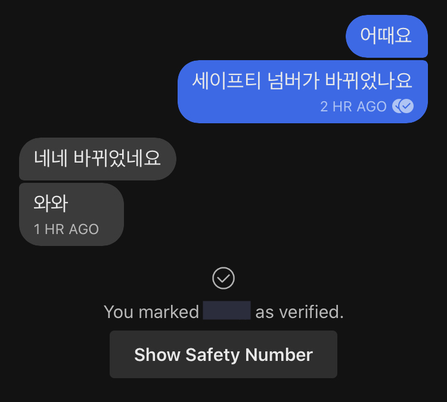

iPhone SE
루머만 많았던 iPhone SE가 출시되었다. iPhone 7, 8과 비슷한 디자인에 A13 프로세서 탑재라는 소식에 고민할 틈도 없이, 4월 18일 새벽에 예약주문을 넣었다. (iPhone 등 Apple 제품의 출시가 빠른 것은 일본에 거주하면서 느끼는 장점 중 하나이다.) 구매 전까지는 iPhone 7을 3년 반정도 사용하고 있었고, iPhone을 교체할까 생각하고는 있었지만, 신형 iPhone으로 교체하지 않고 계속 iPhone 7을 사용하고 있던 이유는 다음과 같다.
- 신형 iPhone(X, XS, 11)의 디자인은 개인적으로 조금 애매하게 느껴졌다.
- 내가 사용하는 기능들에 비해 과도하게 기능이 많다.
- 가격이 부담스럽다. 심지어 일본에 있는동안 소비세가 올랐다...
- 그렇다고 Android로 갈아타기에는 뭔가 미묘하다. 새로운 운영체제에 적응하느라 시간을 뺐기고 싶지 않다.
구입하기
특히 3번째 이유가 결정적이었으나, iPhone SE가 무려 64GB 모델이 44,800엔이라는, Apple 제품으로서는 아주 파격적인 가격으로 출시되고 말았다. 그러면서도 최신의 프로세서를 사용한다는 점에서 몇년은 더 쓸 수 있겠다는 생각이 들어, 128GB 모델을 AppleCare+ 까지 넣어서 58,600엔에 구입했다.
아이폰SE보다 케이스가 먼저 도착. 아이폰7에 끼워서 먼저 사용하기 시작했다 pic.twitter.com/MDDwJpW2Ld
— 현무암 (@loudcolour) April 23, 2020
4월 22일, 같이 주문한 케이스가 먼저 도착했다. 기기 출하는 28일부터인 듯 하다.
그리고 28일 당일, 발송되었다는 메일이 도착했다. 그 다음날인 29일 아침에 물건의 배송이 출발했다는 이메일을 받았고, 12시에 수령하였다.
iPhone SE pic.twitter.com/Q2wsxh48YO
— 현무암 (@loudcolour) April 29, 2020
포장을 뜯고 간단하게 설정을 한 뒤, 사용을 시작했다.
소감은? 뭔가 스마트폰을 교체했다는 느낌이 들지 않는다...만 엄청나게 빠르다. 2016년의 해상도에서 돌아가는 2020년의 칩셋의 조합은 최고다. 단순히 웹사이트 로딩 시간이나 앱 전환시에 걸리는 시간에서도 큰 차이가 느껴진다. Geekbench를 실행한 결과를 Twitter에 업로드하기도 했다. 여러모로 중저가기기에서는 기대하기 힘든 성능이기는 하다.
iPhone SE의 Geekbench 결과. 싱글코어는 iPhone 11 Pro 수준. 멀티코어는 iPhone XR 수준. Metal의 경우는 무려 6420점으로 iPhone 11 Pro에 필적. pic.twitter.com/9m35HuzbST
— 현무암 (@loudcolour) April 29, 2020
사실 개선된 성능 이외에도, iPhone 8이 출시되었을 때부터 사소하게 추가되어 온 기능들을 지금 시점에서 처음 접하게 되었기 때문에, 그러한 기능들을 사용할 수 있게 된 점이 개인적으로는 마음에 든다. 예를 들자면 FeliCa 라든지(iPhone 7의 경우, 일본 모델 한정으로 FeliCa가 탑재되어 Suica 교통카드를 사용할 수 있었다. 다만, 나는 한국판 모델을 구입하여 사용해왔다.), True Tone 색감조정이라든지. 아무튼 iPhone 7보다는 좋다.
설정하기
사실 설정할 게 별로 없었다. 이전에 사용하던 iPhone에서 별도의 PC나 Mac없이 무선으로 데이터를 옮겨올 수 있었기 때문이다. 대부분의 설정이나 컨텐츠는 이 기능을 통해 있는 그대로 옮겨져 있었다. 하지만, 모든 데이터가 자동으로 옮겨지는 것은 아니다. 사진이나 음악은 기기에 크게 의존하지 않는 데이터이기 때문에 문제가 없으나, 기기가 달라지면 이전의 데이터를 그대로 가져와 쓰는 것이 불가능한 데이터도 있다. 이를테면 Signal의 메세지 데이터같은 경우는 macOS나 iCloud를 통한 백업 자체를 지원하지 않기 때문에 데이터는 알아서(...) 보관하여야 한다. 따라서 자동 백업과 복원이 해결하여 주지 않는 설정이나 데이터는 수동으로 처리해 주어야 할 필요가 있다.
일단, Signal의 경우는 이전에 사용하던 기기의 전화번호로 새 기기에 로그인 한다면, E2E 암호화의 신뢰성을 보장하기 위해 (구체적으로는 MITM 공격을 방지하기 위해) 발급하는 Safety Number가 달라져 있는 것을 대화 상대가 확인하게 될 것이다.

즉, 상대방이 이를 Verify하기 위해서는 직접 만나서 본인의 Safety Number가 달라진 것을 확인하거나 별도의 방법을 통해 확인하여야 한다. 대면하여 QR코드를 통해 서로 인증하는 방법이 가장 이상적이라고 생각되나, COVID-19의 여파로 이는 당분간 불가능할 것 같다.
다음으로, 통신사에서 제공하는 프로필이나, VPN에서 제공하는 프로필 등등 각종 프로필을 설치하여야 한다. 별도의 APN을 제공하는 통신사를 사용한다면, 미리 프로필을 설치하지 않은 경우, 데이터를 사용할 수 없게 되니, Wi-Fi를 사용할 수 없는 밖에서 설정할 때에는 이에 주의하여야 한다. 또, 나는 TunnelBear VPN을 이용하므로 TunnelBear 앱에서 제공하는 프로필을 설치하였다. 다만, 자동으로 설정과 데이터를 옮겨 올 경우에, 이전에 사용하던 iPhone의 계정이 로그인 유지되어 있는 경우가 있는데, 이 경우, 로그아웃 후 다시 로그인하여야 정상적으로 프로필을 설치할 수 있다.
마지막으로, Keybase에서 기기 등록을 하여야 한다. Keybase를 모바일 환경에서 사용하기 위해서는 기기 등록을 하여야 한다. 기기 등록을 위해서는 paper key를 포함하여 이미 등록된 기기에 접근 가능하여야 한다. 혹여라도 유일하게 등록된 기기가 모바일 기기인데, 이를 초기화하여버렸다면... 기기를 등록할 방법이 없으니 주의하여야 한다. 더 이상 사용하지 않을 것이 확실한 기기는 등록을 해제할 수도 있다. 또한, 이러한 기록들은 누구나 열람할 수 있도록 그래프나 Sigchain의 형태로 공개된다. 나는 이미 등록해 두었던 기기인 iPhone 7(grothendieck_ver_2)에서 iPhone SE(grothendieck_ver_3)을 인증하여 등록을 완료한 뒤, 기기 목록에서 iPhone 7을 제거하였다. 위 링크의 Sigchain이나 그래프를 통해 이 내용을 확인할 수 있다.

설정이 끝났다. 앞으로도 잘 사용할 수 있으면 좋겠다.
Copyright © 2020 S. Hyeon. Permission is granted to copy, distribute and/or modify this document under the terms of the GNU Free Documentation License, Version 1.3 or any later version published by the Free Software Foundation; with no Invariant Sections, no Front-Cover Texts, and no Back-Cover Texts. A copy of the license is included in the GitHub repo of this site as LICENSE_NOTE.